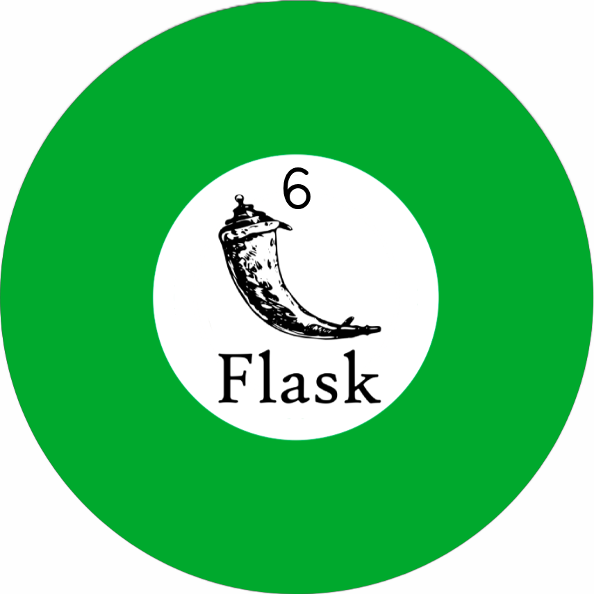
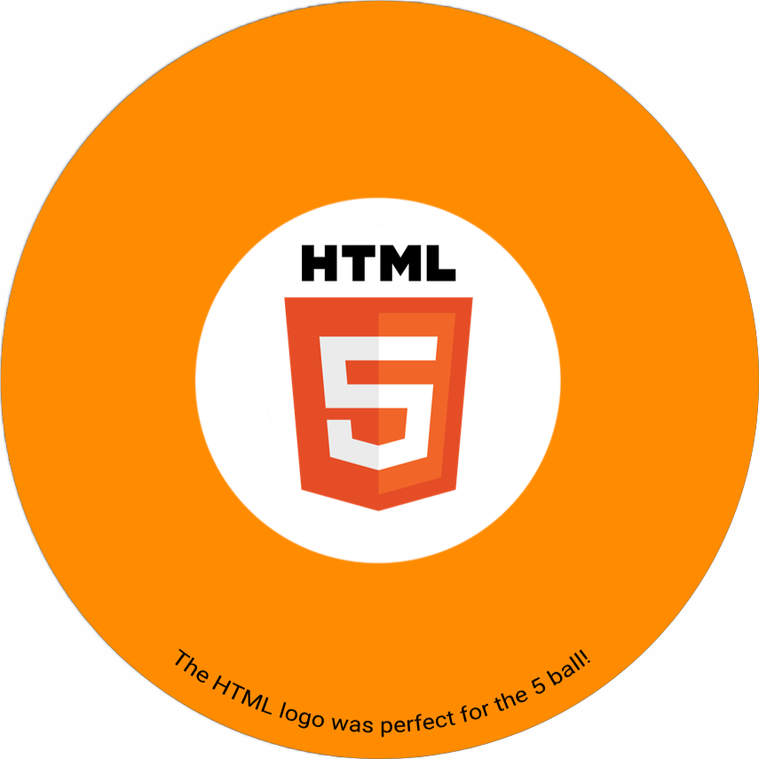
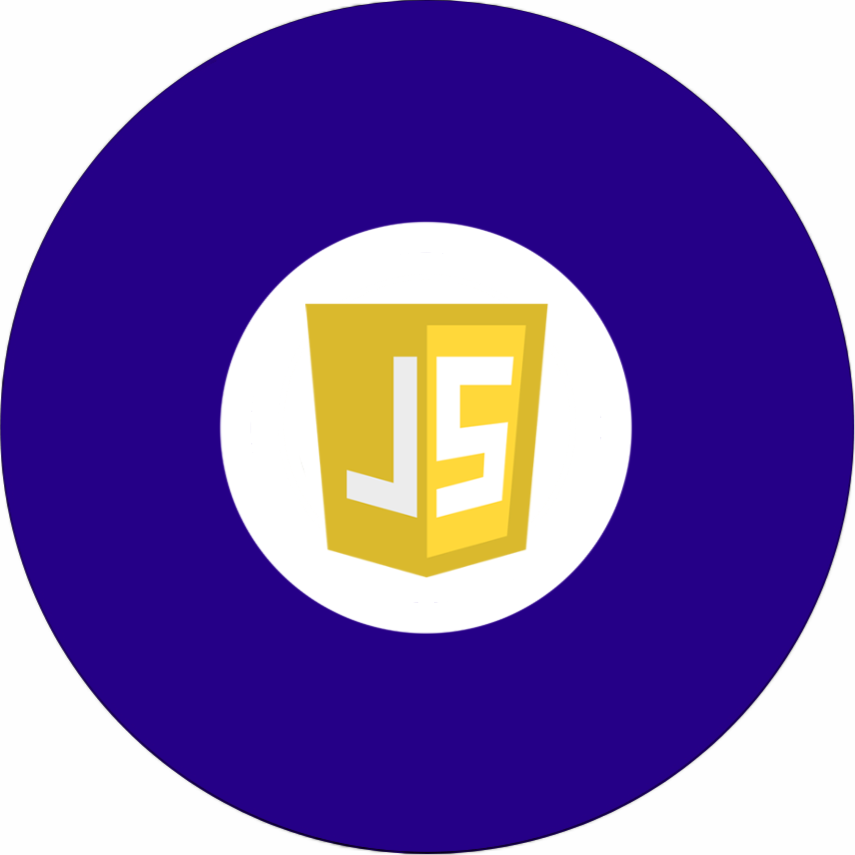
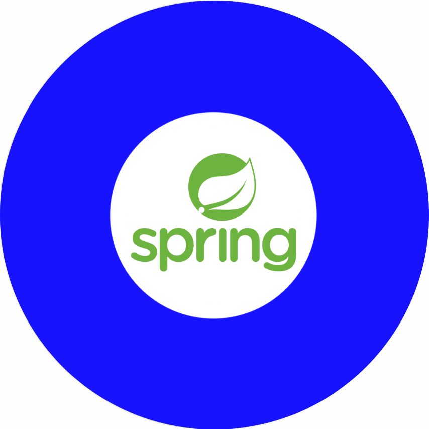
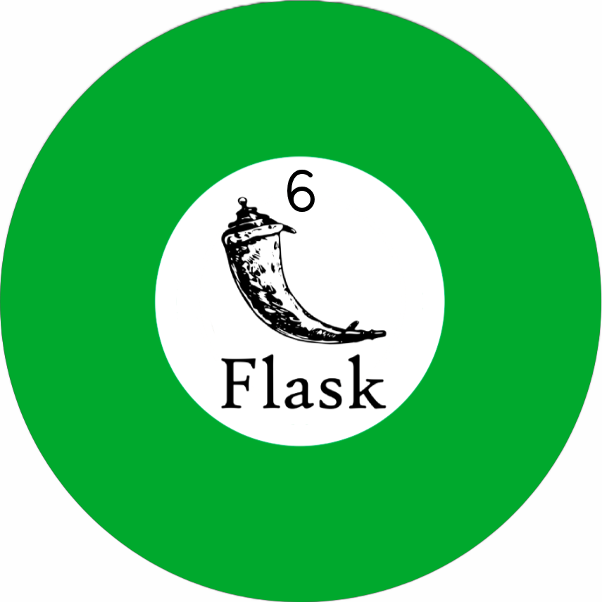
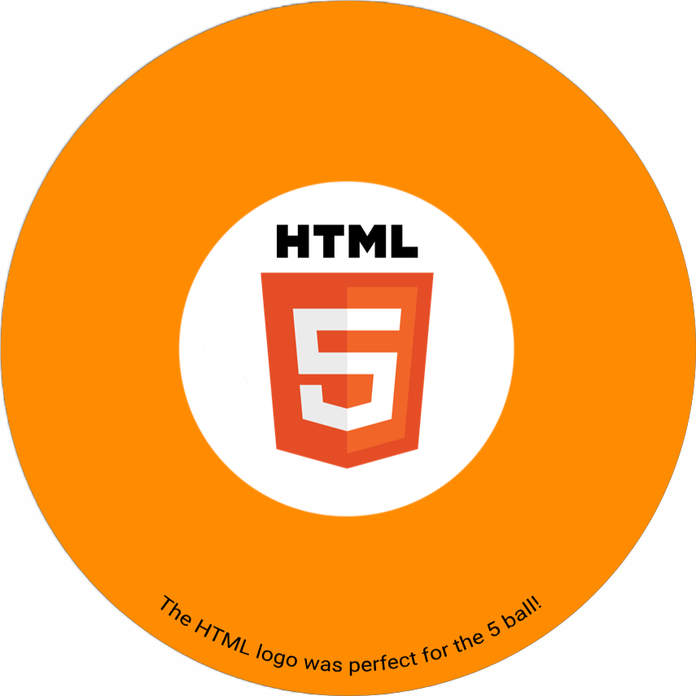
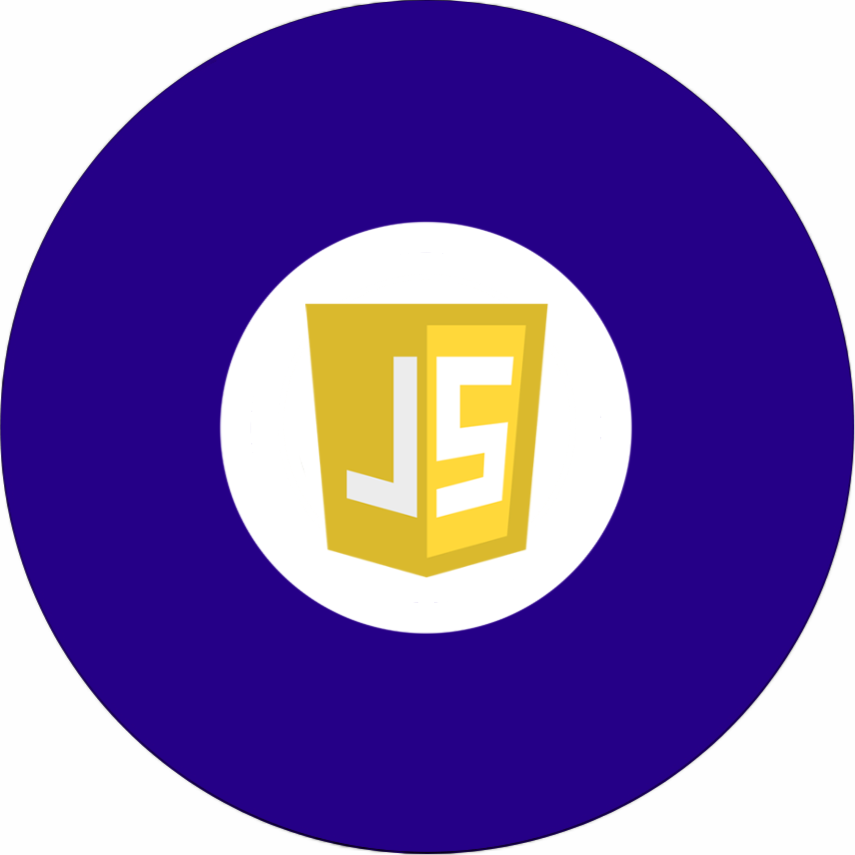
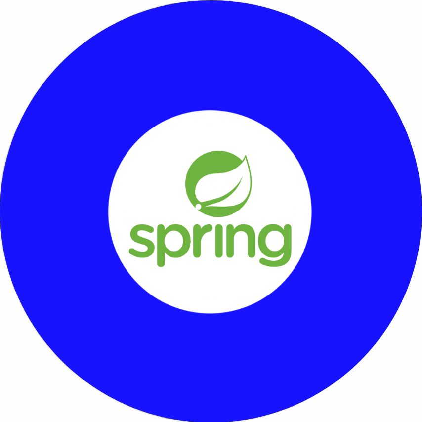

Howdy! I'm William, a computer science student at Cornell University from Dallas, Texas. My area of experience is mainly in backend development—I have experience working with complex, enterprise-scale APIs, as well as simpler, lightweight APIs. I am currently working with State Farm as a part-time intern, where I have the opportunity to work on the Digital Auto Quote API—the API that provides potential customers with an auto insurance quote. I have also begun branching out into other areas such as frontend development and DevOps, learning skills such as HTML/CSS, React, Docker, Kubernetes, finding ways to apply these technologies into my personal projects.
As a software engineer, I strive to create value by identifing problems and implementing creative solutions to solve them. My two main methods of achieving this goal are creating useful functionality and improving efficiency. For example, one of the projects I worked on at State Farm was a script to traverse through the Digital Auto Quote and Purchase (DAQP) UI. Developers and testers regularly need to run through the DAQP UI to ensure that it works as expected. Each happy path run can take up a lot of time: someone would have to enter a valid address, a vehicle with a valid Vehicle Identification Number, and much more. However, using my script, a user would only need to click a bookmark containing some JavaScript code, select run configuration options, and click start. The script reduces the runtime from start to finish by around 45%: essentially, the script I developed became an important tool to improve the efficiency of developing and testing within the product suite.
Outside of work and school, I enjoy playing tennis, hiking, birdwatching, and playing piano. I have recently begun collecting watches - I am fascinated by the seemingly timeless, centuries-old technology that allows the watches of today to keep ticking, and I greatly appreciate the craftsmanship.
Continue scrolling to learn about my skills!
 







Please ignore the dust, this website is still a work in progress!
MADE FROM SCRATCH BY WILLIAM LI 2023